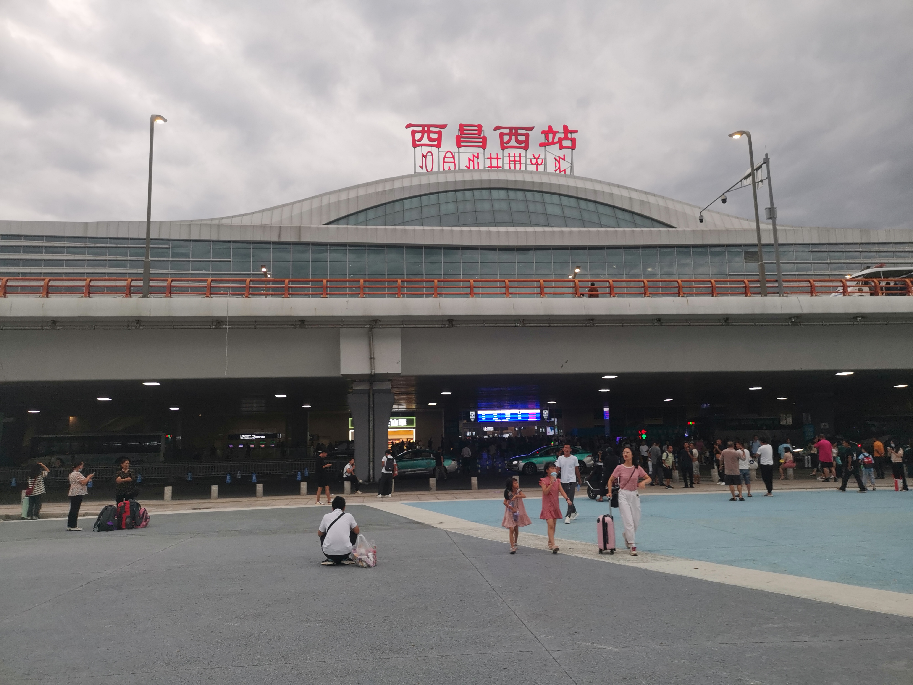
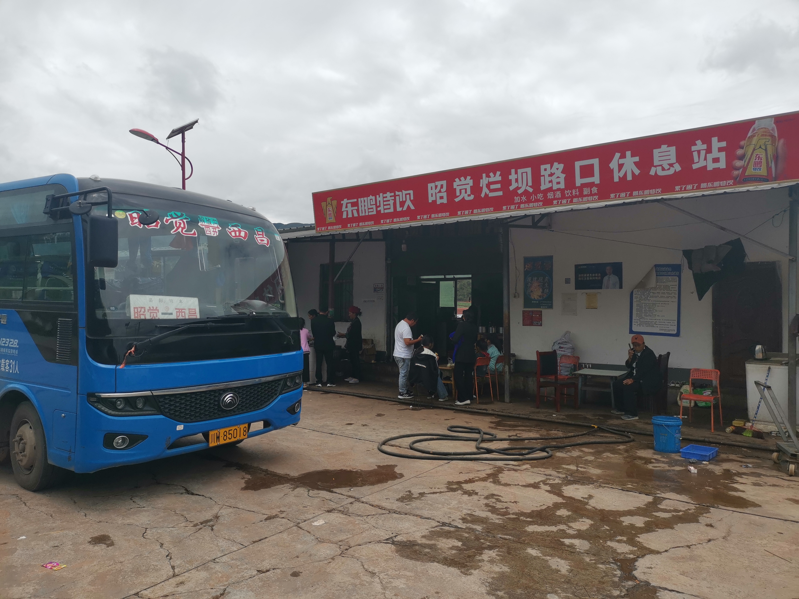
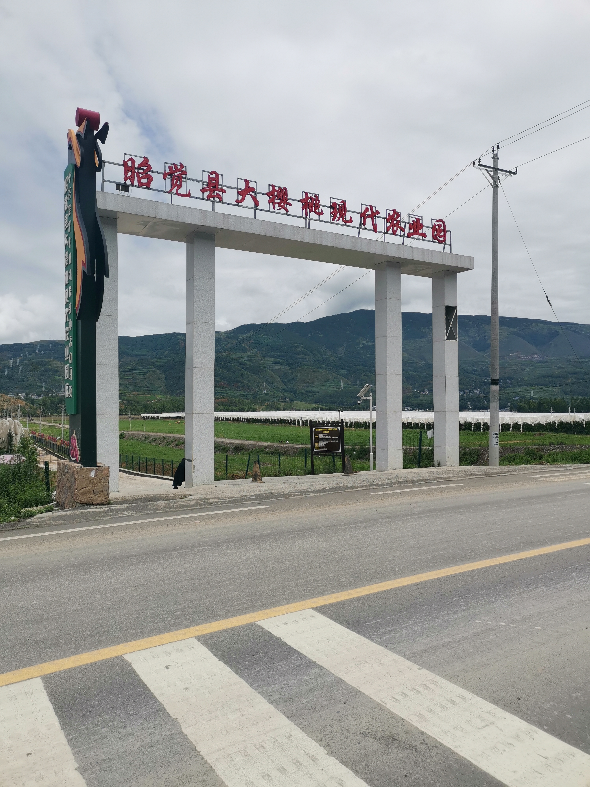
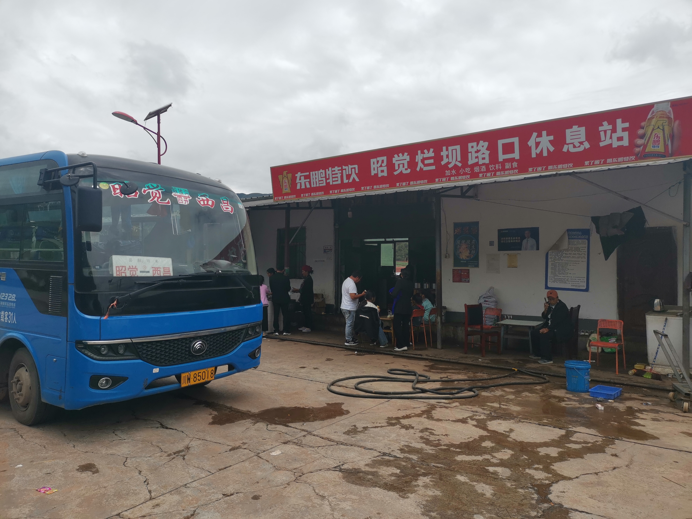
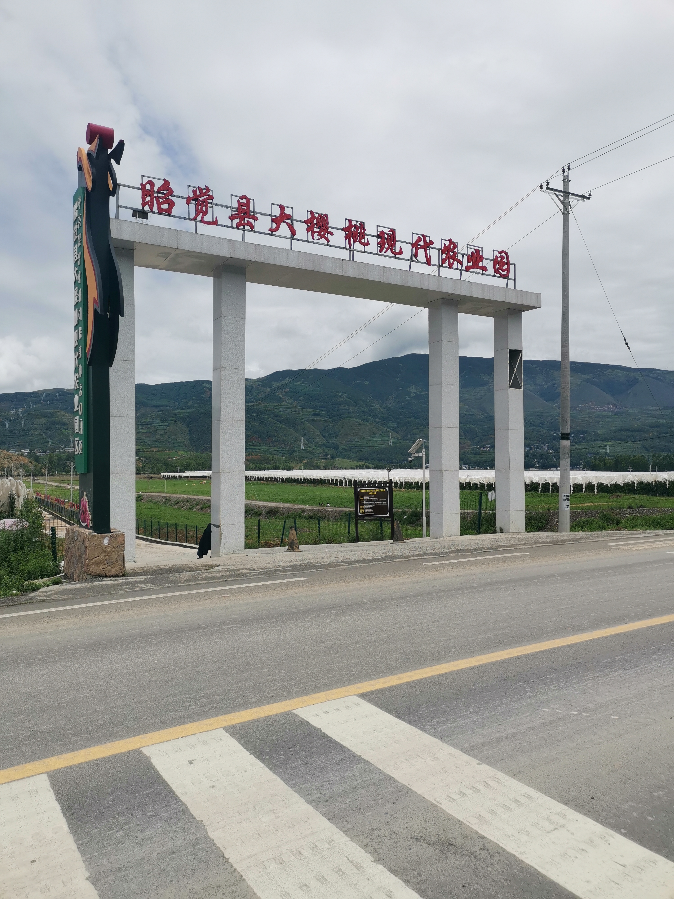
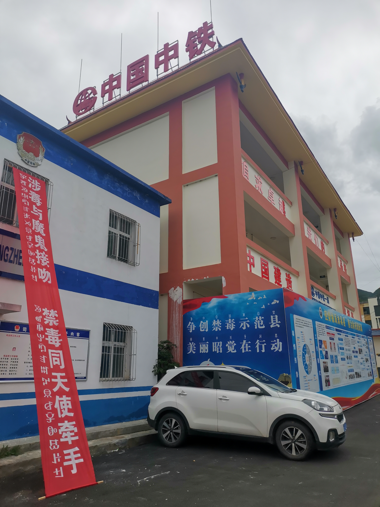
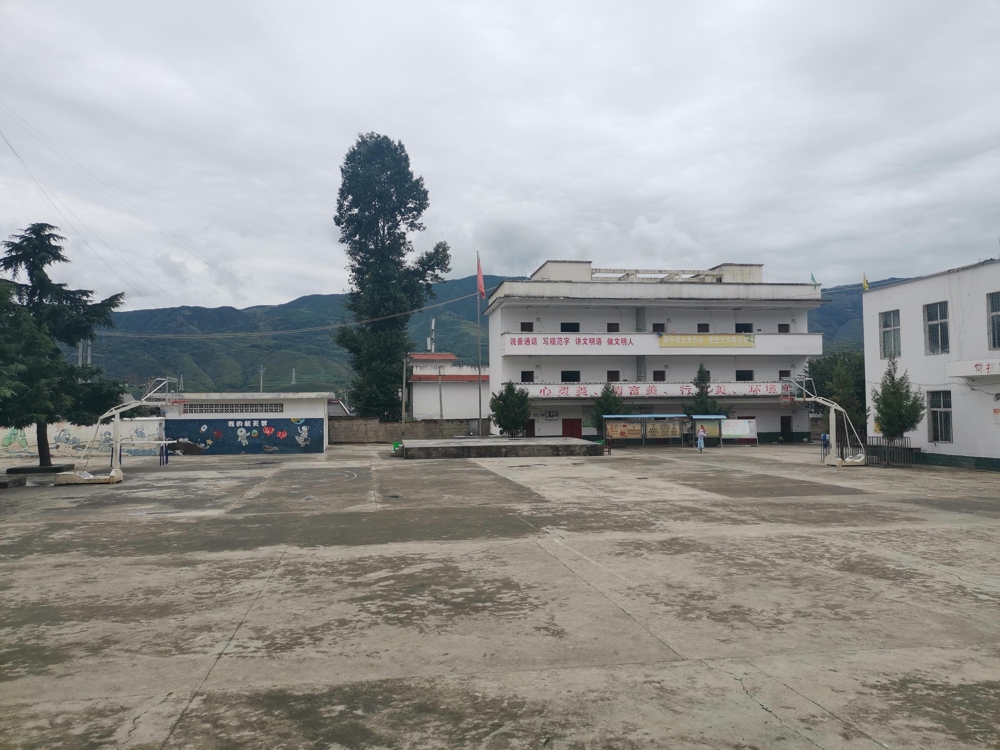
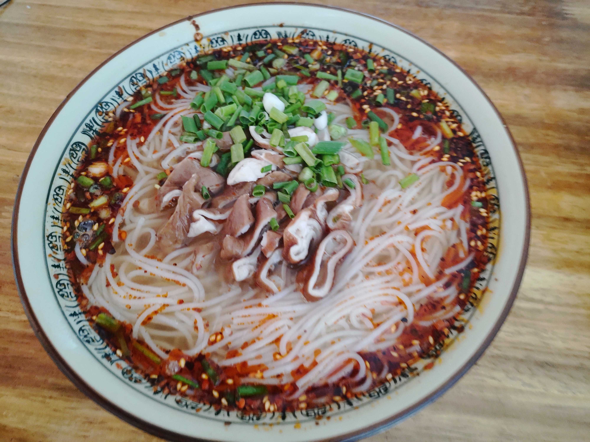
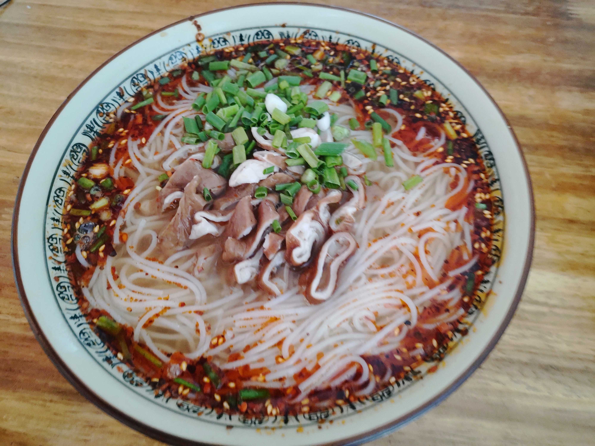

过去两年忙于生计, 没有再以”毕业”为题写过博客. 去年年中至今, 个人生活上经历剧变, 扛住层层压力, 抗争到现在. 期间受到了一些歧视, 一些委屈, 一些侮辱, 一些嫉妒, 经历了人生的一些大起大落.
这两年间, 我与西华师范大学的关联逐渐变淡. 其中有我希望的, 我把大学拿到的一些资助都捐了, 我期望这样可以减少我与西华师范大学的利益关系; 也有令我失望的, 我敬爱的王老师由于某些我尚不清楚的原因断掉了与我的联系. 在历史的记录上, 我认为前者属于新发生的事, 所以将它们记录在本文中; 对于后者, 我认为是一种历史的延续, 一种历史发展的结局, 所以我将它们补充在长文“我的大学”中. 我想这种安排是妥当的.
物质世界
2021年下半年, 中美关系持续恶化, 疫情也持续影响着人类的思维方式, 人们逐渐趋于保守主义, 贸易战在这种背景下终于爆发了. 首先是芯片, 我们公司使用的STM32F系列芯片供不应求, 价格暴涨十倍. 后来公司砍掉了插秧机项目, 随后主持插秧机的同事离职, 我也被安排去做一款面向国内市场的充电桩. 我对这一系列变化感到很失望, 对充电桩这个产品抱有比较消极的态度. 这款产品的定义不明朗, 甚至最开始想做成一款交直流一体的设备, 既是交流充电桩, 也是直流充电桩. 芯片选型时我们选择用紫光展锐8910DM作为主控, 上海合宙基于这款芯片和一种对我陌生的脚本语言lua作为开发环境. 随着迭代, 最终这个产品还是被定义为了一个交流充电桩, 但芯片没有改变. 最大的问题是这个芯片的开发环境很恶劣. 紫光展锐当时正面临破产重组, 内部管理混乱, 也使得sdk结构混乱. 我印象很深的一个点是adc采样接口, sdk的开发者可能只想到用adc对麦克风之类的外设采样, 毕竟这是一个网络芯片, 大多数用途是老人机和儿童电子手表, 提供的adc采样接口速度非常慢, 采样1个数据要1毫秒, 后来我想尽各种办法都实现不了控制效果, 翻阅资料发现sdk对adc采样接口的实现里做了7次采样取中位数输出的算法. 而即便是除以7, 每次采样的耗时也有100微秒, 太慢了. 再就是sdk只提供给一些产业链中游的模组生产商使用, 这些生产商对原版sdk做了不同程度的封装, 留下一些极不稳定的api提供给开发者. 合宙方面的问题是文档不完善, 接口定义不合适, 各种函数一眼看不出来用途, 参数不翻阅文档无法明白其用途; lua作为制造业嵌入式领域的编程语言还是太新颖, 噱头大于实用性, 用于控制则是慢上加慢. 有了合宙作为中间人, 我们对开发环境的需求实现时间被拉得很长, 经常要等着合宙实现一种特定接口, 我们才能开发一点东西, 直到遇到下个需要新接口的需求再提给合宙, 然后再等他们实现, 整个过程繁琐冗长, 跟便秘一样, 一颗一颗往外掉. 我的问题则是缺少经验, 对插秧机项目搁置感到不满, 对充电桩项目比较消极, 后来与领导的开发理念不和, 年后回到公司干了一段时间, 最后选择在2022年3月15日离开了这家公司.
3月正式离职前我就有联系过一些公司, 我找过一家龙岗的”即将上市”的企业, 他们当时说计划今年上市, 人手一个项目, 所以要加班, 问我能不能接受. 我说我能不能少拿点钱不加班, 他们说大家都不想加班. 直到现在, 我打下这些文字, 这家”即将上市”的企业仍旧没有上市. 有一家公司做qt开发, 看到我简历上写的物理系, 在学校里学的是相对论, 还给了我一个拒绝理由叫”学相对论的, 到我们这屈才了”. 也有公司拒绝得很舒坦, 直接讲要科班毕业的, 不这样弯弯绕绕. 有一家公司做扫地机器人, 我去面试了, 那个老板长得像张宏浩, 我印象很深. 他一开始说是在宝安工作, 后来怎么又说要我工作一个月后调去光明的上市总部, 我在网上搜了一下那个总部的工商信息, 是个家族企业, 感觉很怪, 最后我没去. 还有一家公司做工业相机, 他们可以用一些图像算法计算出照片里材料的应力之类的数据, 和物理贴得很近, 我也很想去, 但我后来面试没有通过. 后来我准备到光明的科曼医疗. 我通过了他们的笔试, 搬到了光明, 结果面试我的人说我当时看上去意愿不强, 以为我不去, 并没有准备我的入职. 后来人事为难我, 说我尿酸高, 让我降下去了再入职. 后来我降下去了也没再去了. 2022年的4月清明假期, 我到宝安一家做充电桩的初创公司面试, cto本科保送北大化学系, 研究生在港科大读的化学, 期间做大学生机器人比赛接触了嵌入式, 毕业后转行做这方面的研发工作. 面试时他跟我说的第一句话是, 你简历里说搞过杨米尔斯理论, 你讲讲什么是杨米尔斯理论, 我讲了几句, 他说可以, 但今天是来面试我技术能力的, 暂时先把那些放一放. 后来我了解了一下公司的情况, 给他们讲了我的经历和技术兴趣, 他们带我去附近的奈雪的茶喝了杯饮料, 留我在那里吃了中午的快餐. 我在上家公司对充电桩留下了阴影, 所以后来跟ceo讲这个技术难度不高, 但后来还是入职了, 直到现在. 那段时间还是挺迷茫的, 因为异地的女友不愿意我在这家公司上班, 她已经感到我会越来越忙, 没有时间陪伴她. 而且我尚且没有长时间通勤的经历, 不晓得我会面临什么. 后来我每天都有来回三个多小时的通勤时间, 每天都要加班, 整天出门在外的时间都有十三四个小时, 回到租房又累又困, 只想睡觉. 这也为我与女友的隔阂埋下了伏笔.
再往后就是日复一日的重复性的劳动. 2022年7月, 与我一同入职的一个嵌入式同事离职了, 他的技术经历比我丰富, 他的离职对cto有一些打击, cto在当年9月30日退出公司合伙人, 直到2023年4月才回来. 这期间公司招来一名嵌入式负责人, 他的开发理念与cto不太一样, 但cto状态不佳, 我也没有经验, 只能让他顶上. 他一上来就把之前的一些设计都改了, 并留下了一些遗留至今无法解决的屎山问题. 一个我们内部著名的屎山问题是端序问题, 他当时声称大端序比较适合人类的阅读习惯, 可以降低部门间的沟通成本, 因此将通信协议设计为大段序. 然而历史经验告诉我们, 这是非常狗屎的设计, 如果没有这个设计, 我们现在部门间沟通的效率至少可以提高一倍.
22年我陆将存款的一部分捐赠给了两个慈善机构, 一个是雅安红十字, 用于泸定地震相关事宜; 一个是中国乡村发展基金会, 用于乡村教育设施的建设. 我很早前曾联系过大坝乡中心小学校的校长拉马日夫, 想定向捐赠, 但拉校不接受. 23年7月我回凉山后回想起这件事, 觉得可能是因为体制内对这种事有冗长的流程要走, 又或是行政区域改制, 大坝乡中心校的行政单位、人员已经重组了. 后来有一小部分我给了一个支教时学前班的小孩子, 她是学前班的班长之一, 家庭环境良好, 普通话说得很好, 很有希望走出去. 捐款其实没什么目的, 这个行为本身是虚无的, 不抱有什么目的性. 如果非要讲出什么原因, 我觉得就是我不想拿西华师大一分钱. 但回过头来, 做事一定要抱有什么目的吗? 我想也不一定. 做事可以就是为了做事本身, 可以不抱有任何目的性. 我信奉这种虚无主义的哲学, 正如”学理论不需要有用, 就是陶冶情操”, 王老师如是说. 虽然只是他的随口一句, 但至少我觉得, 里面有深刻的思想. 我把这种对待理论物理的哲学延拓到了在社会中生存的方方面面中. 但我的家人以及女友都对此不解, 他们讲我愚蠢, 讲我被人骗了, 讲我很虚伪, 为此我与他们发生了很多争吵. 许多看不惯我做事的人常讲一种处事哲学, 无外乎”严于律己, 宽以待人”, “个人自扫门前雪, 休管他人瓦上霜”, “改变不了就要学会适应”之类. 但有意思的是, 这些话所描述的哲学应该作用到自身才对, 如果将这些哲学作用到他人身上, 这个行为恰好违反了这种哲学想传递的思想. 但他们满口仁义道德, 习惯于将这种哲学强加在他人身上, 要他人也去遵守这种哲学体系. 这显然是错误的. 有个物理学家对某个物理问题有个很恰当的表述, 叫”not even wrong”, 意思大概是”连错都算不上”, 我觉得也可以用在这. 我不吃这一套, 所以当我回击他们时, 他们就讲我戾气很重, 总是传递负能量, 我的哲学造成了一些不良后果, 以此来维护自己的哲学. 但我没有道义去适应他们的这些哲学, 如果看不惯我, 那就请阁下”严于律己, 宽以待人”, “个人自扫门前雪, 休管他人瓦上霜”, “改变不了就要学会适应”吧.
我说学院老师枉为人师的时候, 有些人就跳出来说什么”严于律己, 宽以待人”之类的话, 言下之意就是管好自己莫管别人. 现在我捐款这些人又跳出来说慈善机构都是骗子, 然后例举郭美美等例, 如此这般. 我就横竖不是人. 老子捐钱捐物花的是老子自己的钱, 关你们鸡巴毛事？
(2022年09月10日14时14分)
经常有人问我为什么学物理, 为什么从西华师范大学毕业却不当老师. 我没什么想法, 我学物理就是为了学物理, 我高考471分没有选择, 我只能读西华师范大学. 我不当老师是我不想当老师, 我去西华师范大学只是想学物理, 没有想当老师.
我在西华师范大学四年不是很开心, 从人到事, 从选择物理到放弃物理, 在西华师范大学经历的大部分事都让我很难过.
我几乎每一学期都挂科, 学分绩点最低只有1.6, 所以我没有拿过一次奖学金. 我唯一一次拿助学金是因为我父亲找社区拿了一个证明, 证明了家里很穷, 拿了3000块钱. 2016年9月30日天文系成立仪式上, 班长看到我找高中同学买的1300块钱的三手iPhone5s, 还要去求证“用得起iPhone的人, 家里是不是真的穷”.
即便是这样, 我还是拿了西华师范大学很多钱, 但这些钱在我工作后却成为了我的负担. 我时不时就会想起在西华师范大学那四年的经历, 然后陷入深深的痛苦. 我一直在想办法脱离干系, 西华师范大学给我的每一分钱都让我感到恶心, 让我喘不过气.
现在我把这些钱都捐了. 我的动机很纯粹, 就像我就是为了学物理而学物理一样, 上述内容促使我做出这些捐赠行为的最大动力, 我希望我与西华师范大学除了学籍外没有任何关系, 我希望我与教育行业没有任何关系, 我希望不再有人叫我老师, 我希望不再有人问我“为什么不当老师”.
我最亲近的那些人认为我或是在制造噱头, 或是在感动自己, 或是不晓世事, 甚至绝得我的行为像毒贩烧香拜佛一样, 是为了在做了亏心事后降低自己的负罪感. 我实在不晓得我做错了什么, 我希望这些人能对号入座, 对我善意一点, 毕竟我做这些事没有伤害过任何人.
我能追溯到的, 从西华师范大学拿的钱总计一万五千零三十三块九毛五, 我全部以捐赠的形式回馈给社会了. 我不管拿到这些钱的人拿这些钱去干嘛, ta去赌博也好, 嫖娼也好, 卖国也好, 我不在乎, 我完成了我该做的.
(2022年10月01日22时21分)
22年底, 我们遇到一个rfid的疑难问题, 软硬件互相甩锅, 谁也拿不出关键证据. 我不擅沟通, 对此疲惫不堪, 将自己置身事外. cto临危受命, 回到广府, 临时住在公司附近的城中村里, 每天跟我们调试到凌晨. 这是一场公司内部的攻防战, 以子之矛, 攻子之盾, 你说软件有问题, 那一切软件逻辑就完全按照规格书来, 排除一切软件问题, 如果这样还有问题, 那就是硬件问题. 问题解决的最后一个晚上, 软件部门终于摆脱了嫌疑. 其中的逻辑推演很简单, 但我做不了这个, 负责人也做不了这个, 只有cto可以, 在于其经验, 在于其逻辑推演能力, 也在于其领导力. 这件事也让cto找回了自信, 给回归团队打下了基础. 那天几位创始人和我们复盘到晚上10点多, 硬件部门继续复盘, 负责人与我先行撤退. 他和我站在电梯里, 他说, 这帮创始人从北大, 港科大, 康奈尔读出来, 还是有很多值得学习的地方的. 次年年初, 部门又招进一位实习的理科状元, 上交本科, 港科大硕士在读, 他身上有很多名号. 即便他刚进来的时候啥也没做, 负责人也给予他高度评价, 说人家还是有很多值得学习的.
负责人常说这个东西能跑了就不要动它了, 研发要考虑产品的生命周期, 还声称我被面向对象的错误观念荼毒了, 要把工程的语言从C++改回C. 但他错误的估计了我们这个产品的生命周期, 错误的估计了业务逻辑的复杂程度, 最后导致整个软件毫无层级关系, 难以为继. 他的这些理念一直持续到2023年5月, 然后他又轻易的接下了”7月做完负载均衡”的军令状, 负载均衡是一个多设备的均衡策略, 可以让家庭光伏、家庭负载、家庭储能单元与充电桩在有限的能源供应条件下实现动态平衡. 我对此感到难以相信, 此时我们的工程早已结构混乱, 诡异bug频发, 还想往里加这么复杂的功能, 还两个多月做出来, 这不是搞笑么. 伴随着我与女友的一些矛盾, 我忍受不了了, 我在公司里大发雷霆, 我说有的员工负责的干活你们打压他们揪着他们讲话的字眼不放, 有的人不干活瞎指挥你们视而不见. 随后cto便介入了, 多次与几位合伙人一起找负责人谈话. 期间负责人极其反对对软件代码的任何修改, 并继续反对在工程中使用现代C++方法. 后来伴随我与女友的矛盾, 我的状态急转直下, 于是在当年7月开始休假散心. 这期间cto无力挽回局面, 负责人继续着他的”杰作”. 放假后我与大学的马同学在光明呆了一段时间. 在此之前, 他在华东师范学习理论物理, 想继续学习弦论, 但没有申请到国外的博士名额, 错过了薛迅的新疆大学的博士名额, 也没有面试上中山大学的博士名额. 他把在华东师大的行李寄到了我这, 其中还有我们本科时的那套床单被褥, 看着那些东西记忆一下子就回到了大学时代. 他在我这里打地铺呆了几天, 本想继续留在深圳, 我带他去附近租房, 最后他遭了房东莫名的嘲讽, 有点怂了, 就把那些行李打包然后回呼和浩特去了. 而我在次日坐了30个小时的硬座去了昆明, 然后换乘前往西昌的动车.
{kind=link}
到西昌后, 我在2019年拍摄学位证件照的酒店住了一晚, 这家酒店和另一家酒店有名字冲突的矛盾, 所以改了名字, 但房间里的床具都还是当时的那个名字. 次日早晨我去汽车站买了票前往昭觉. 路上我看到了正在修建的都香高速和成片的风力发电机, 还是非常让人震撼的.
 



{kind=link}
{kind=link}
过了四开乡, 我在往布拖方向的岔路口下了车, 然后走了一个小时到了大坝乡. 路上我就意识到, 我搞错了, 我不该买西昌到昭觉的汽车票, 而是应该买西昌到布拖到汽车票, 这样就不用走这么远了. 大坝乡的稻田没有了, 现在他们培育了万亩樱桃园, 乡政府也没有了, 他们施行了拆乡并镇政策, 现在只有地莫镇了[1]. 大坝乡中心小学校也没有了, 原址上重新组建了地莫镇中心校. 我看到了他们的新教学楼. 7月学生都放假了, 学校很安静, 门口苍蝇横飞. 一开始学校的门没有开, 校门口的老人问我是干什么的, 我说我之前在这里支教过, 现在回来看看. 他说里面有人, 我大点声音喊就有人来开门了. 门里有个小女孩, 是门卫大爷的家属, 她说她也没有钥匙. 几分钟之后一个特岗老师到了这里开了门, 他说他们次日要进行培训, 他住的远, 就提前来了. 我问他当时的一些老师还在吗, 他说都调走了, 只有当时的一些基层老师可能还在这里. 我便没再与他有过多的交流. 我在支教时每天都用的一排水龙头前洗了把脸, 然后坐在老教学楼前的操场中间的楼梯上, 看着墙壁上仍然挂着的旧领导班子的简介, 只感到物是人非.
 {kind=link}
{kind=link}


我坐了一会便走了, 除了门卫大爷, 我并没有遇到第二个认识的人. 离开学校时, 校门口的老人告诉我, 他就住在这个门口, 那是一个小商铺, 学生开学时这里会售卖一些玩具、零食. 他告诉我, 叫他老洛就好了, 我到这里可以找到他. 我到路口拦了一辆昭觉县常见的面包车, 告诉司机自己要去昭觉县里. 然后就离开了原来的大坝乡, 如今的地莫镇. 昭觉发展得很快, 路上很多刚修好的学校和住宅楼, 甚至都做起了房地产生意, 一些像华莱士、蜜雪冰城之类的网红快餐店都开到了大山里. 我在人民英雄纪念碑附近的一家面馆里吃了一份肥肠面, 然后就去汽车站买了最后一班回西昌的班车. 晚上我走在西昌的街头, 感到无比的迷茫. 当年在大坝乡支教的同学告诉我, 他们也很怀念那个时候, 但他们知道再也回不去了, 所以也没有再回去看过. 他们说, 我怀念的是那时的人和事, 而现在已经没有那些人了. 这是很简单的道理, 而我自认为很聪明, 但终于还是要他们告诉我, 我才能晓得这个道理.
 

{kind=link}
次日我便动身离开西昌. 我做事没有计划, 喜欢走一步看一步, 这也导致离开西昌的车票不足. 我本想去南充看看, 但没有车过去, 后来买到了到峨边南站换乘前往成都的动车票. 我在峨边南待了几小时, 吃了一份方便米粉. 后来在车上站了四五个小时, 中途得知了一些令我震惊的新闻, 最后到了成都. 下车之后我约了一个支教时同寝室的同学, 结果后来他一直打麻将没有赴约. 我在他们校门口用@小鞄送我的一张星巴克优惠券买了一杯咖啡, 坐了一会. 次日我便乘车回到湖北. 我在家里待了两周, 本想在家学车, 后来父母把我赶回了深圳. 女友在合肥面试完, 来深圳与我待了十几天, 我们一起去爬阳台山, 去吃点都德, 吃披萨, 去了大梅沙, 这是她第一次看到海, 她像小朋友一样坐在地上挖沙子玩水, 把衣服都打湿了, 我把我的背包给她挡着. 这次见面基本清空了她的心愿单, 我们度过了最后一段难忘的日子.
8月1日, 我复工了. 到岗第一天, 我问负责人负载均衡做完了吗, 他说早就做完了. 我很惊讶, 这么复杂的工作, 居然一个月就做完了. 随后两个月的测试中当然测出了无数bug, 在实际环境中基本无法工作, 负责人已经无力通过各种稀奇古怪的补丁来维护这个复杂度的模块了, 最后整个模块在一个文件里洋洋洒洒写了两三千行代码, 他与另一位无辜的同事甚至无法讲清楚整个负载均衡的逻辑链路. 过去我不断探索各种现代C++的各种方法论, 目的就是想提高生产力, 降低自己的工作量, 用更少的代码实现更多的功能, 将自己从无休止的重复劳动中解放出来. 但负责人极力抵抗新事物, 想尽办法为自己的陈旧观念作辩护, 想通过这种方式维护自己的正统地位, 不惜拉低生产效率, 牺牲公司利益. 他的领导最终变成了对我的压迫. 这时候, 就要斗争. 几位创始人掌握着公司的生产力, 属于小资产阶级, 但他们也承受了巨大的压力. 很多时候我们都走了, 他们还在继续工作, 他们不想当打工人, 他们比打工人更累. 在与负责人发生了数次对抗后, 我当然与小资产阶级统一了战线, 解放生产力发展生产力变成了我们的共同利益. 2023年9月27日晚, coo亲自监督他与同事加班做到凌晨3点, 最后没有做出来, 负责人于次日请假. 这是公司氛围最诡异, 最紧张的时候. 国庆之后, 前文讲到的这个无辜的同事当了替罪羊, 被cto开除. 我与cto接管了负责人的工作, 将整个项目重构了一遍. 10月底, 负责人被开除. 他被开除前曾私下对我抱怨, 他说我们每个人都有家庭的, 只有你把公司的事当自己的事. 实际上他与公司的雇佣关系是一种落后的生产关系, 这种关系来源于他落后的生产力. 我很痛恨他可以这样冠冕堂皇的讲出这样的屁话, 谁他妈的没有家庭, 就你有家庭, 我也不是从石头缝里蹦出来的.
这一年多经常有同事问我为什么住光明不搬到固戍. 我可以给出可数无穷个理由, 我随时可能跑路, 我不想换个工作就换个住的地方, 我不喜欢固戍的人口密度, 我喜欢人少的社区, 我有心理疾病, 我东西太多了不好搬迁, 我有自虐倾向, 我在执行一场慢性自杀.
这让我想起去年的捐赠. 去年我把西华师范大学曾经打给我的钱核算了一遍, 然后分批次捐赠给了雅安红十字和中国乡村发展基金会. 那时我也曾给出各种各样的理由作答复我的行为, 我希望除学籍外我与西华师范大学没有任何关联, 我想通过这种方式给我在慈善机构的小三买奢侈品, 我感到对不起昭觉县那一百零八个六七岁的娃娃, 我想塑造一个完美的人设, 我在制造噱头, 我想让我在深圳纳的税通过减税政策转移支付给川西.
这让我想起我曾经的教育行业的经历. 我也得一遍又一遍的解释我为什么毕业于师范大学却没有当老师, 为什么读书时学的物理毕业了却没有当老师.
(2023年10月31日午)
我接管了负责人的工作, 拿着比负责人低的工资, 干着比负责人更多的活. 同时, 从女友离开深圳, 我因为某些事与女友开始了无止境的争吵. 在双重压力下, 我在2023年底完成了负载均衡的整体架构设计, 迭代至今, 底层的基本逻辑没有发生过变化, 在某种程度上也说明这是一个完备的设计. 同时, 我与女友家庭的矛盾也爆发了, 只因我前往女友读书的城市与她待了三天, 她的家人就在背后讲了各种闲话, 讲我不上班吗怎么还不走. 我给他们发我和女友的照片, 他们又讲我在挑衅. 我向他们表示, 你们这样非常愚蠢, 不该当面一套背后一套, 我没有什么很差劲的地方, 你们犯不着这样对我, 这样对我很不公平. 随后她愚蠢的家人对我进行了毫无底线的辱骂, 持续到今年2月. 我手头有一个多钟的通话录音, 我真的很想把这些寄生虫、蚂蝗放到太阳底下暴晒, 让世人见识一下人心之恶. 但由于某些原因, 我不能这样做.
这些经历也在某种意义上展示了人生现实的一面. 我不再能提供给王老师和女友及其家人利益与价值, 于是我与他们之间就产生了利益冲突. 王老师处理这些冲突的方式是果断的, 女友这边则是冗长的, 这只是处理方式上的不同, 但本质上都是一样的. 另一方面, 我可以给公司带来利益与价值, 于是我与他们之间就产生了利益交换. 公司得到了更加稳定完备的软件设计, 我得到了业务能力和收入的提升.
工作上的事理顺后压力就逐步减少了, 唯一的压力就是这整套逻辑只有我一人从头到尾跟下来, 所以我要充当项目维基百科的角色. 随后的日子在无边无际的争吵与日复一日的工作中度过, 持续至今, 终于得以喘歇. 事情的发展让人失望, 但又不得不接受, 路还得继续走下去.
精神世界
我这几年我才慢慢晓得, 我感兴趣的应该是数学物理偏应用的方向, 而不是理论物理或高能物理.
我喜欢钻牛角尖, 读书的时候我对物理上一些模糊的定义很困惑, 比如学量子力学的时候我的关注点都是物理量算符是哪个集合中的元素, 泊松括号是哪到哪的映射, 等等. 时隔四年, 我回看我的毕业论文也是这样, 整篇文章里我都在用尽力气想去搞清楚规范场是哪个集合的, 霍奇对偶是从哪映射到哪, 但我始终也没搞清楚那些拉回推前映射, 我的文章应该是把一些同构的集合关系弄混到一起去了. 再就是我对实验完全不感兴趣, 我不懂我学的东西要怎么应用. 高能物理里有个重要的概念叫散射截面, 这是原子物理课程的第一堂课就会学的东西, 我不懂, 也做不到. 再比如算一些具体的, 氢原子的薛定谔方程的解, 太具体了, 一堆特殊函数, 我不懂, 也做不到. 我就喜欢搞清楚你这个东西输入啥, 输出啥, 从哪来到哪去, 我搞得不怎么样, 但也只搞得到这些. 不过好的地方是, 经过这些抽象的训练, 我在一些抽象的客体的”应用”上会更加有经验.
我现在做的是写代码的工作, 我当时学的东西和写代码研究的东西就有点类似. 譬如, 物理里有个重要的概念叫张量, 一些人也叫它并矢. 它有一种”面面观”, 就是说可以从各种角度去看待它, 好似”盲人摸象”. 其中一种观点是把它看成多重线性映射, 这描述的是一种”映射的映射”. 意思就是, 张量是一种作用到”函数”上的函数, 它的输入是函数, 输出也是函数. 这个就和最新的一些代码范式的思想是相通的, 这个叫函数式编程. 写代码的科学里有个科目叫数理逻辑, 里面有些广为流传的”废话”, 最有名的当属”皮亚诺公理”, 它研究的是自然数的哲学, 比如2是1的后继, 0不是任何自然数的后继, 然后就可以证明3+4=7这样的自然数集上的加法为何成立的哲学. 数理逻辑是个很大的领域, 这只是其中一个小例子. 回到前文提到的张量, 数理逻辑里有个很相似的东西叫谓词逻辑, 这个东西频繁出现在现代c++的标准库里, 比如std::unordered_map, 它是一个用模板技术实现的一种时间复杂度几乎O(1)的查找表, 查找方式有很多种, 这种东西要抽象出来, 就需要输入一个谓词逻辑, 用来定义什么是”相等”; 再比如std::find_if, 它用来迭代一个迭代器, 并找到第一个满足谓词逻辑的成员, 要抽象出来这里面的结构, 这个谓词逻辑就要定义什么是真什么是假. 这里的谓词逻辑就是一种和张量类似的概念, 可以构造一种映射, 输入一种谓词逻辑, 输出一种谓词逻辑, 甚至可以定义出它们的对偶性以构造出协变性和逆变性, 如是代码也可以形成一种”映射的映射”.
我国电网高度发达, 我们已经习以为常, 但在欧洲要用各种技术规避掉电网落后带来的问题. 欧洲所有国家的充电桩都需要负载均衡、相位均衡策略动态调节功率. 中国修充电站, 是按需求来, 调研需求量, 从电网扯线, 建变压器, 建站, 电是要多少, 给多少. 欧洲电网技术落后, 但修充电站只管建, 电不够用就限电, 人工限电太麻烦就自动化限电. 为此, 他们设计了 load balancer 这种东西, 用它来监控电网的电力参数, 通过一些信息传递媒介将电力数据传递给充电桩, 充电桩就可以根据电网的实际情况调整自己的额定功率, 实现负载均衡. balancer 也要用电, 他们发现已实施多年的电表除了能自给自足, 信号线还能提供额外的电能. 一些 balancer 就寄生在电表上, 靠电表供电. 但电表有好些种, 虽然他们制定了一些标准来规定电表的技术参数, 但欧洲的企业自由散漫过头了, 不按照标准来. 于是 balancer 演化出了好些种, 有的支持电表 ABC, 有的支持电表 ADE, 没有一款是全部支持的.
充电桩方面, 在设计初期, 我们的产品拥有一个继电器组, 我们想用这种硬件来灵活切换相序, 比如电工按顺序接好L1 L2 L3的相线, 我们可以通过软件控制闭合不同的继电器, 实现不同的输出. 学过抽象代数的人一看就晓得, 这会产生6种不同的排列组合, 分别是输入的L1 L2 L3转换到输出的L1 L2 L3, L1 L3 L2, L2 L1 L3, L2 L3 L1, L3 L1 L2, L3 L2 L1. 但后来我们的同事到欧洲实地访问之后发现, 这帮电工压根搞不懂接线, 他们可能并不按照L1 L2 L3的接线方式去接充电桩的进线, 而是会刻意交换进线端的相序, 以确保每根相线上的电尽可能的均衡. 他们给这个取了一个名字叫”phase rotation”. 我们原本想在软件上做的事, 这帮电工在外部硬件上去实现了, 这是我们没想到的. 所以我们后来有了第二款充电桩, 把继电器组去掉了, 进线端直接输出到对应的输出端. 这就是后话了, 在此之前, 我们带继电器组的充电桩还得继续维护, 但软件上就又有了一层转换, 相当于真实的相线顺序要经过一层”phase rotation”, 再经过一层继电器拓扑, 最后才会输出. 这会影响我们采集的电流数据的顺序, 因为我们的电流互感器数据默认是L1 L2 L3的顺序, 这组数据不能直接使用, 需要转换成正确的相线的数据. 那怎么描述这种转换呢, 实际上就是一个3阶(维?次?我不晓得是怎么讲的)置换群的群乘法. 这对数学、物理系的学生来说是容易抽象的, 但对制造业的同事来说简直是降维打击, 群论, 太高大上了. 这样, 一些原本用于广义相对论里全反对称张量的计算方法, 结果最后被我用到了充电桩的相序切换逻辑中去了.
中国没有发展出自己的科学体系, 但经济飞跃式发展使我们没有这些历史遗留问题. 欧洲佬有能力从希腊哲学发展出现代科学的方法论, 主导发动两次世界大战, 却没有能力革新技术, 啃老本, 走向极左极右, 导致近些年联盟瓦解, 经济衰退. 虽然我做的这些应用比不上yau和顾险峰等人用在图形学、图像处理里的那些方法那样高大上, 但这也会带来一些思维上的转变. 比如原来我会觉得, 这个物理上的东西非常精妙, 仿佛是经过人为设计的; 但我现在在制造业写代码, 我会觉得, 这个满足三相交流充电桩IEC 61851标准的东西也可以有那些结构. 于是, 那些原本被认为是造物主设计的东西, 仿佛就成了物理工作者的一厢情愿罢了.
参考文献
[1] 四川省人民政府. 四川省人民政府关于同意凉山州调整普格县等7县部分乡镇行政区划的批复（川府民政〔2021〕1号）[DB/OL]. link, 2021-01-13, 2024-07-10